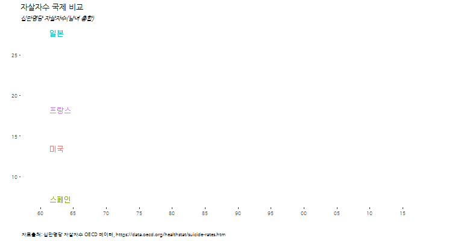
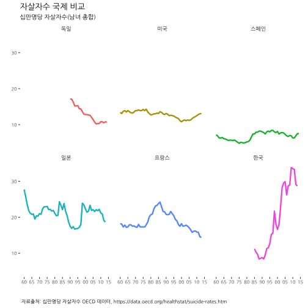
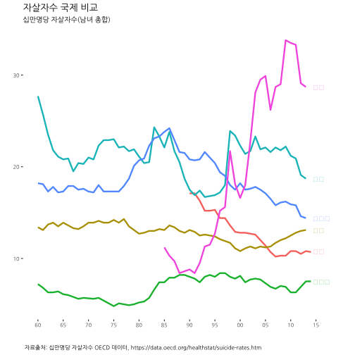
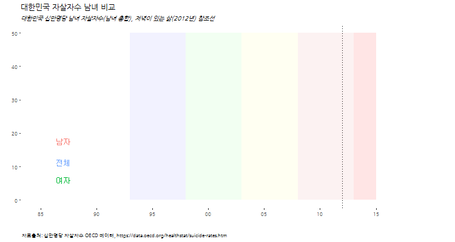
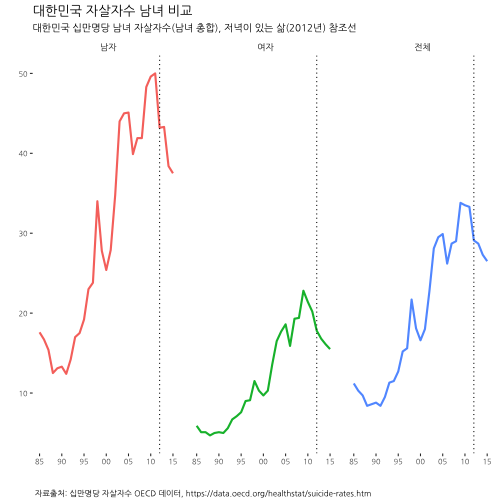
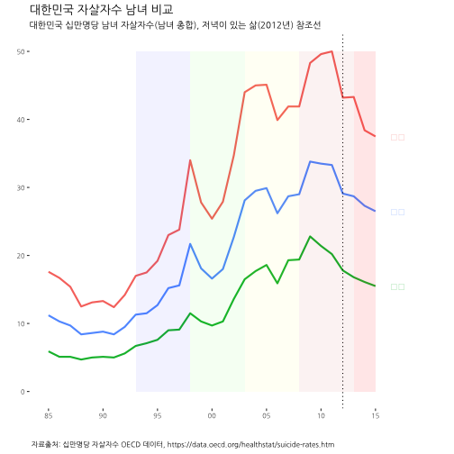

데이터 과학자와 함께 하는 제19대 대통령 선거
자살자수 국제비교(10만명당 자살자수)
1. OECD 주요국가 자살자수 1 2
저녁이 있는 삶이 2012년 손학규 대표가 대통령 출마를 선언하면서 한국사회에 던진 출사표다. 저녁이 있는 삶을 보장받기 위해서 자살에 내몰릴 정도로 물질적 뿐만아니라 정신적으로도 안정성이 확보된 사회여야만 한다. OECD에서 매년 조사하고 있는 주요국가 자살자수(10만명당) 데이터를 시각화해서 국내외 언론에서 언급하고 있는 심각한 사회문제를 다시 생각해본다. 3 4
이렇게 슬픈 심정으로 데이터를 분석한 적은 처음이다. 데이터를 분석하는 사람으로서 이렇게 자괴감을 느껴본 적은 없다. 참담하다.

2. OECD 주요 십만명당 자살자수 추이 시각화
OECD 공개 데이터를 구글에서 검색하면 쉽게 OECD Suicide rates 웹사이트에 접속하게 된다. 엑셀이나 .csv 등 분석에 용이한 형태로 다운로드 받는다.
2.1. 환경설정
# 0. 환경설정 --------------------------------------------------------------------------
library(tidyverse)
library(lubridate)
library(ggthemes)
library(animation)
library(extrafont)
loadfonts()2.2. OECD 십만명당 자살자수 데이터
데이터를 불러와서 시계열 데이터형태로 변형한 후에, 한국을 비롯한 주요 국가를 선택하고, 한글화 작업을 한다.
# 1. 데이터 가져오기 --------------------------------------------------------------------------
# https://data.oecd.org/healthstat/suicide-rates.htm
suicide_dat <- read_csv("data/DP_LIVE_19012017113839293.csv", col_names=TRUE)
# korea_friends <- c("Korea", "Germany", "Spain", "Japan", "United States", "OECD countries")
korea_friends <- c("한국", "독일", "스페인", "일본", "미국", "프랑스")
# korea_friends <- c("KOR", "DEU", "ESP", "JPN", "USA", "FRA")
# 2. 데이터 정제 --------------------------------------------------------------------------
suicide_dat$LOCATION <- plyr::revalue(suicide_dat$LOCATION, c("DEU" ="독일",
"KOR" = "한국",
"ESP" = "스페인",
"USA" = "미국",
"JPN" = "일본",
"FRA" = "프랑스"))
suicide_df <- suicide_dat %>% dplyr::filter(LOCATION %in% korea_friends & SUBJECT =="TOT") %>%
dplyr::select(country=LOCATION, TIME, suicide=Value) %>%
mutate(date = ymd(paste0(TIME,"-01-01"))) %>% dplyr::select(-TIME)
dlist <- unique(suicide_df$date)2.3. 한국을 포함한 6개국 십만명당 자살자수 시각화
“한국”, “독일”, “스페인”, “프랑스”, “일본”, “미국”, 6개국에 대해 시각화한다.
# 3. 십만명당 자살자수 시각화 --------------------------------------------------------------------------
# 3.1. 십만명당 자살자수 국제 비교 ------------------------------------------------------------------
ggplot(data=suicide_df,
aes(x=date, y=suicide, group=country, color=country, label=country))+
geom_line(size=1.1) +
scale_x_date(breaks=seq(dlist[1], tail(dlist,1) + years(1), "5 year"),
date_labels="%y",limits=c(dlist[1], tail(dlist,1)+years(1)))+
facet_wrap(~country)+
theme_tufte() +
theme(legend.position="none", plot.caption=element_text(hjust=0,size=8),plot.subtitle=element_text(face="italic"),
axis.text=element_text(size=7.5))+
labs(x="",y="",title="자살자수 국제 비교",
caption="\n 자료출처: 십만명당 자살자수 OECD 데이터, https://data.oecd.org/healthstat/suicide-rates.htm",
subtitle="십만명당 자살자수(남녀 총합)") +
theme(text=element_text(family="NanumGothic"))
2.4. 한국, 일본, 미국, 독일, 프랑스, 스페인 일괄비교
facet 그래프가 아니라 한국, 일본, 미국, 독일, 프랑스, 스페인, 십만명당 자살자수를 일괄비교하는 시각화 그래프를 생성한다.
ggplot(data=suicide_df,
aes(x=date, y=suicide, group=country, color=country, label=country))+
geom_line(size=1.1) +
scale_x_date(breaks=seq(dlist[1], tail(dlist,1) + years(1), "5 year"),
date_labels="%y",limits=c(dlist[1], tail(dlist,1)+years(5)))+
geom_text(data=suicide_df %>% dplyr::filter(date==dlist[54]), hjust=0, nudge_x=500) +
theme_tufte() +
theme(legend.position="none", plot.caption=element_text(hjust=0,size=8),plot.subtitle=element_text(face="italic"),
axis.text=element_text(size=7.5))+
labs(x="",y="",title="자살자수 국제 비교",
caption="\n 자료출처: 십만명당 자살자수 OECD 데이터, https://data.oecd.org/healthstat/suicide-rates.htm",
subtitle="십만명당 자살자수(남녀 총합)") +
theme(text=element_text(family="NanumGothic"))
2.5. 한국을 포함한 6개국 십만명당 자살자수 변화 애니메이션
한국을 포함한 6개국 십만명당 자살자수 변화를 애니메이션으로 시각화한다.
suicide_plot<-function(i){
ggplot(data=suicide_df %>% dplyr::filter(date<=dlist[i] & country %in% korea_friends),
aes(x=date, y=suicide, group=country, color=country, label=country))+
geom_line(size=1.1) +
scale_x_date(breaks=seq(dlist[1], tail(dlist,1) + years(1), "5 year"),
date_labels="%y",limits=c(dlist[1], tail(dlist,1)+years(5)))+
geom_text(data=suicide_df %>% dplyr::filter(date==dlist[i]), hjust=0, nudge_x=500) +
theme_tufte() +
theme(legend.position="none", plot.caption=element_text(hjust=0,size=8),plot.subtitle=element_text(face="italic"),
axis.text=element_text(size=7.5))+
labs(x="",y="",title="자살자수 국제 비교",
caption="\n 자료출처: 십만명당 자살자수 OECD 데이터, https://data.oecd.org/healthstat/suicide-rates.htm",
subtitle="십만명당 자살자수(남녀 총합)") +
theme(text=element_text(family="NanumGothic"))
}
oopt = ani.options(interval = 0.5)
saveGIF({for (i in 1:(length(dlist)-1)) {
g <- suicide_plot(i)
print(g)
print(i)
ani.pause()
}
for (i2 in 1:20) {
print(g)
ani.pause()
}
}, movie.name="suicide_compare_international.gif",ani.width = 750, ani.height = 400)
3. 대한민국 남녀별 십만명당 자살자수 비교
OECD 자살율 데이터에서 2013년까지만 대한민국 자살율 정보가 포함되어 있어, 통계청에서 발간하는 데이터를 2014, 2015년 붙여 인구 십만명당 자살자수 데이터를 준비한다.
김영삼 대통령 문민정부 이래 5년 단위 각 정권별 구간을 각 정권 대표 색상으로 표식하기 위한 데이터를 준비한다.
# 1. 데이터 가져오기 --------------------------------------------------------------------------
# https://data.oecd.org/healthstat/suicide-rates.htm
suicide_dat <- read_csv("data/DP_LIVE_19012017113839293.csv", col_names=TRUE)
# 2. 데이터 정제 --------------------------------------------------------------------------
suicide_dat$LOCATION <- plyr::revalue(suicide_dat$LOCATION, c("KOR" = "한국"))
suicide_dat$SUBJECT <- plyr::revalue(suicide_dat$SUBJECT, c("MEN" = "남자",
"WOMEN" = "여자",
"TOT" = "전체"))
# 2014년 남녀 자살자수 추가
# http://www.index.go.kr/potal/stts/idxMain/selectPoSttsIdxMainPrint.do?idx_cd=2992&board_cd=INDX_001
kr_suicide_df <- suicide_dat %>% dplyr::filter(LOCATION %in% "한국") %>%
dplyr::select(country=LOCATION, TIME, suicide=Value, subject=SUBJECT) %>%
mutate(date = ymd(paste0(TIME,"-01-01"))) %>% dplyr::select(-TIME) %>%
add_row(country="한국", suicide=27.3, subject="전체", date="2014-01-01") %>%
add_row(country="한국", suicide=38.4, subject="남자", date="2014-01-01") %>%
add_row(country="한국", suicide=16.1, subject="여자", date="2014-01-01") %>%
add_row(country="한국", suicide=26.5, subject="전체", date="2015-01-01") %>%
add_row(country="한국", suicide=37.5, subject="남자", date="2015-01-01") %>%
add_row(country="한국", suicide=15.5, subject="여자", date="2015-01-01")
dlist <- unique(kr_suicide_df$date)
# 대한민국 정권
regime_1993 <- data.frame(x1=c(1993), x2=c(1998), y1=c(0), y2=c(50)) %>%
mutate(x1 = ymd(paste0(x1, "-01-01")), x2 = ymd(paste0(x2, "-01-01")))
regime_1998 <- data.frame(x1=c(1998), x2=c(2003), y1=c(0), y2=c(50)) %>%
mutate(x1 = ymd(paste0(x1, "-01-01")), x2 = ymd(paste0(x2, "-01-01")))
regime_2003 <- data.frame(x1=c(2003), x2=c(2008), y1=c(0), y2=c(50)) %>%
mutate(x1 = ymd(paste0(x1, "-01-01")), x2 = ymd(paste0(x2, "-01-01")))
regime_2008 <- data.frame(x1=c(2008), x2=c(2013), y1=c(0), y2=c(50)) %>%
mutate(x1 = ymd(paste0(x1, "-01-01")), x2 = ymd(paste0(x2, "-01-01")))
regime_2013 <- data.frame(x1=c(2013), x2=c(2015), y1=c(0), y2=c(50)) %>%
mutate(x1 = ymd(paste0(x1, "-01-01")), x2 = ymd(paste0(x2, "-01-01")))3.1. 대한한국 십만명당 남녀별 자살자수 시각화
# 3. 십만명당 자살자수 시각화 --------------------------------------------------------------------------
# 3.1. 대한민국 십만명당 자살자수 남녀 비교 ------------------------------------------------------------------
ggplot(data=kr_suicide_df,
aes(x=date, y=suicide, group=subject, color=subject, label=subject))+
geom_line(size=1.0) +
scale_x_date(breaks=seq(dlist[1], tail(dlist,1) + years(1), "5 year"),
date_labels="%y",limits=c(dlist[1], tail(dlist,1)+years(1)))+
facet_wrap(~subject, ncol=3)+
geom_vline(xintercept=as.numeric(ymd("2012-01-01")), linetype=3) +
theme_tufte() +
theme(legend.position="none", plot.caption=element_text(hjust=0,size=8),plot.subtitle=element_text(face="italic"),
axis.text=element_text(size=7.5))+
labs(x="",y="",title="대한민국 자살자수 남녀 비교",
caption="\n 자료출처: 십만명당 자살자수 OECD 데이터, https://data.oecd.org/healthstat/suicide-rates.htm",
subtitle="대한민국 십만명당 남녀 자살자수(남녀 총합), 저녁이 있는 삶(2012년) 참조선") +
theme(text=element_text(family="NanumGothic"))
3.2. 대한한국 십만명당 남녀별 자살자수 일괄비교 시각화
# 3.2. 대한민국 십만명당 자살자수 남녀 비교 ------------------------------------------------------------------
ggplot() +
geom_line(data=kr_suicide_df, aes(x=date, y=suicide, group=subject, color=subject, label=subject), size=1.0) +
scale_x_date(breaks=seq(dlist[1], tail(dlist,1) + years(1), "5 year"),
date_labels="%y",limits=c(dlist[1], tail(dlist,1)+years(5)))+
geom_text(data=kr_suicide_df %>% dplyr::filter(date==tail(dlist,1)),
aes(x=date, y=suicide, group=subject, color=subject, label=subject), hjust=0, nudge_x=500) +
geom_vline(xintercept=as.numeric(ymd("2012-01-01")), linetype=3) +
theme_tufte() +
theme(legend.position="none", plot.caption=element_text(hjust=0,size=8),plot.subtitle=element_text(face="italic"),
axis.text=element_text(size=7.5))+
labs(x="",y="",title="대한민국 자살자수 남녀 비교",
caption="\n 자료출처: 십만명당 자살자수 OECD 데이터, https://data.oecd.org/healthstat/suicide-rates.htm",
subtitle="대한민국 십만명당 남녀 자살자수(남녀 총합), 저녁이 있는 삶(2012년) 참조선") +
theme(text=element_text(family="NanumGothic")) +
geom_rect(data=regime_1993, mapping=aes(xmin=x1, xmax=x2, ymin=y1, ymax=y2), fill="blue", alpha=0.05) +
geom_rect(data=regime_1998, mapping=aes(xmin=x1, xmax=x2, ymin=y1, ymax=y2), fill="green", alpha=0.05) +
geom_rect(data=regime_2003, mapping=aes(xmin=x1, xmax=x2, ymin=y1, ymax=y2), fill="yellow", alpha=0.05) +
geom_rect(data=regime_2008, mapping=aes(xmin=x1, xmax=x2, ymin=y1, ymax=y2), fill="#BB0000", alpha=0.05) +
geom_rect(data=regime_2013, mapping=aes(xmin=x1, xmax=x2, ymin=y1, ymax=y2), fill="#FF0000", alpha=0.1)Warning: Ignoring unknown aesthetics: label

3.3. 대한한국 십만명당 남녀별 자살자수 변화 애니메이션
대한한국 십만명당 남녀별 자살자수 변화를 애니메이션으로 시각화한다.
# 3.3. OECD 십만명당 자살자수 변동 애니메이션----------------------------------------------------
kr_suicide_plot<-function(i){
ggplot() +
geom_line(data=kr_suicide_df %>% dplyr::filter(date<=dlist[i]), aes(x=date, y=suicide, group=subject, color=subject, label=subject), size=1.0) +
scale_x_date(breaks=seq(dlist[1], tail(dlist,1) + years(1), "5 year"),
date_labels="%y",limits=c(dlist[1], tail(dlist,1)+years(5)))+
geom_text(data=kr_suicide_df %>% dplyr::filter(date==dlist[i]),
aes(x=date, y=suicide, group=subject, color=subject, label=subject), hjust=0, nudge_x=500) +
geom_vline(xintercept=as.numeric(ymd("2012-01-01")), linetype=3) +
theme_tufte() +
theme(legend.position="none", plot.caption=element_text(hjust=0,size=8),plot.subtitle=element_text(face="italic"),
axis.text=element_text(size=7.5))+
labs(x="",y="",title="대한민국 자살자수 남녀 비교",
caption="\n 자료출처: 십만명당 자살자수 OECD 데이터, https://data.oecd.org/healthstat/suicide-rates.htm",
subtitle="대한민국 십만명당 남녀 자살자수(남녀 총합), 저녁이 있는 삶(2012년) 참조선") +
theme(text=element_text(family="NanumGothic")) +
geom_rect(data=regime_1993, mapping=aes(xmin=x1, xmax=x2, ymin=y1, ymax=y2), fill="blue", alpha=0.05) +
geom_rect(data=regime_1998, mapping=aes(xmin=x1, xmax=x2, ymin=y1, ymax=y2), fill="green", alpha=0.05) +
geom_rect(data=regime_2003, mapping=aes(xmin=x1, xmax=x2, ymin=y1, ymax=y2), fill="yellow", alpha=0.05) +
geom_rect(data=regime_2008, mapping=aes(xmin=x1, xmax=x2, ymin=y1, ymax=y2), fill="#BB0000", alpha=0.05) +
geom_rect(data=regime_2013, mapping=aes(xmin=x1, xmax=x2, ymin=y1, ymax=y2), fill="#FF0000", alpha=0.1)
}
oopt = ani.options(interval = 0.5)
saveGIF({for (i in 1:(length(dlist)-1)) {
g <- kr_suicide_plot(i)
print(g)
print(i)
ani.pause()
}
for (i2 in 1:20) {
print(g)
ani.pause()
}
}, movie.name="kr_suicide_.gif",ani.width = 750, ani.height = 400)